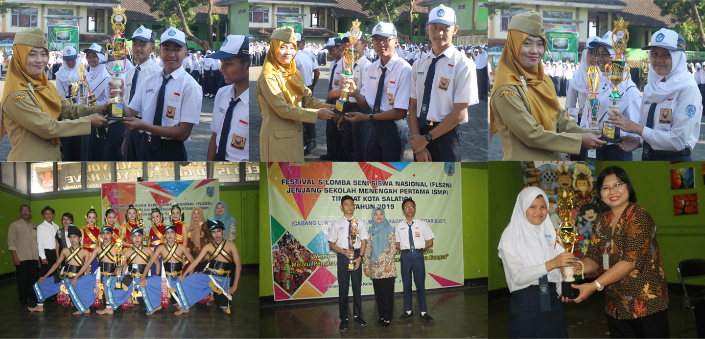

SMP Negeri 1 Salatiga dikenal memiliki sejarah panjang dalam menghasilkan prestasi siswa di berbagai bidang. Sepanjang tahun-tahun terakhir, banyak peserta didik sekolah ini yang berhasil meraih juara dalam kompetisi tingkat lokal maupun lebih luas. Misalnya, pada Lomba Siswa Berprestasi Tingkat Kota Salatiga tahun 2017, dua siswa SMPN 1 Salatiga berhasil membawa sekolah meraih Juara 1 dalam ajang tersebut, menunjukkan kekuatan akademik siswa di mata pelajaran umum dan kemampuan presentasi mereka.
Prestasi siswa di SMP Negeri 1 Salatiga terus berlanjut di periode yang lebih baru. Pada awal April 2022, siswa-siswi sekolah ini mencatat berbagai capaian di ajang kompetisi akademik, termasuk Juara 2 Lomba English Academy Speech, perolehan medali perunggu dalam Olimpiade Sains Pelajar Nasional, serta gelar Juara 1 dalam Mapel Competition tingkat SMP se-kawasan Semarang. Selain itu, terdapat juga beberapa medali dalam lomba sains lainnya, seperti bidang IPA dan Bahasa Indonesia, yang menunjukkan keberagaman prestasi akademis yang diraih siswa sekolah ini.

Tidak hanya di ranah akademik, siswa SMP Negeri 1 Salatiga juga aktif tampil dan berprestasi di kegiatan ekstrakurikuler dan acara budaya. Di tahun 2025, sekolah ini berhasil meraih Juara 2 dalam Kreativitas Umum pada Pawai Taaruf 1 Muharram Kota Salatiga serta menjadi Juara Umum FLS3N (Festival Lomba Seni dan Sastra Siswa Nasional) tingkat kota, menunjukkan kemampuan siswa dalam seni, kreativitas, dan ekspresi budaya di luar kelas.